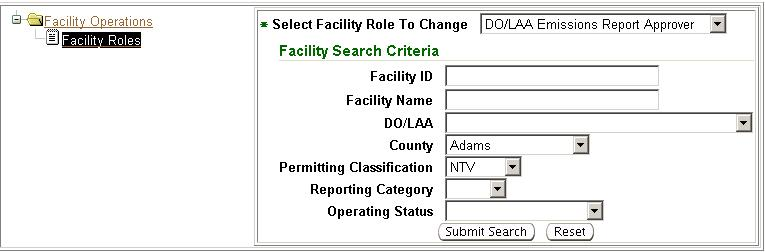
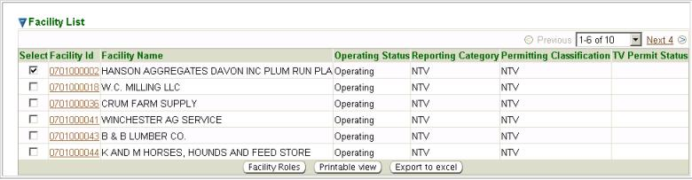
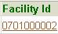
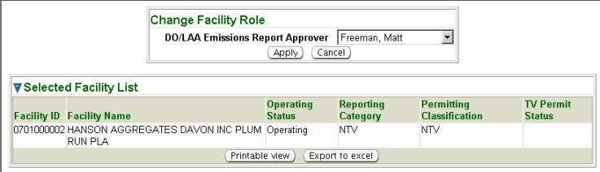

Previous Topic
Next Topic
| Tools |
Previous Topic |
Next Topic |
The system’s second-level menu, Bulk Operations, of the Tools tab allows you to select different options to perform wholesale data replacements within the system. For example, if an Ohio EPA Staff person leaves the agency and a new person replaces them, this function allows you to re-assign all tasks in a geographic area (or based on other search criteria, e.g., facility class) to the new person.
You can choose bulk operation options by navigating through
the
folder(s). To navigate through a folder to see available search
options, click on the ‘+’ sign next to the folder, , expanding it, .
Below the expanded folder you will see choices for available search
options represented with the icon,  . Click on the hyperlinked title
next to the icon to open the selected search option fields. You will
enter the search criteria as text or by selecting from picklist(s) and
click
to begin the search. The search results will be displayed in a
datagrid list.
. Click on the hyperlinked title
next to the icon to open the selected search option fields. You will
enter the search criteria as text or by selecting from picklist(s) and
click
to begin the search. The search results will be displayed in a
datagrid list.
For example, when selecting a Facility Roles bulk operation under the Facility Operations folder, the role you’d like to change can be selected from the Select Facility Role to Change picklist, in this example DO/LAA Emissions Report Approver was selected for facilities in Adams County with a Permitting Classification of NTV:

The datagrid below displays the results:

Depending on the bulk operation chosen different data will be displayed in the datagrid.
Anywhere in the datagrid you see brown underlined text, for example , you can click on the hyperlink to access the information. In this example the column header is Facility Id and clicking on an Id will open the associated Facility Detail. Also, depending on the bulk operation chosen, additional options may be available to perform more functions. In this example, by placing a checkmark in the Select column for the facility you wish to change the Facility Role selected in the search criteria, and clicking , a pop-up will be generated displaying the selected Facility Role giving a picklist of users to assign to the role:

After selecting the appropriate user, to complete the bulk
operation,
in this example Change
Facility Role, click  to complete the change.
to complete the change.
As with all datagrids, information from the list may be
viewed, exported
to Excel or printed. By clicking  you may view and print. By
clicking
you may view and print. By
clicking  a
pop-up will appear in which you must click Open in
order to view the
information in Excel.
a
pop-up will appear in which you must click Open in
order to view the
information in Excel.
For more information about functionalities of search, input fields and datagrids, see the specific Help pages below.
Copyright © 1996, 2004, Oracle. All rights reserved.